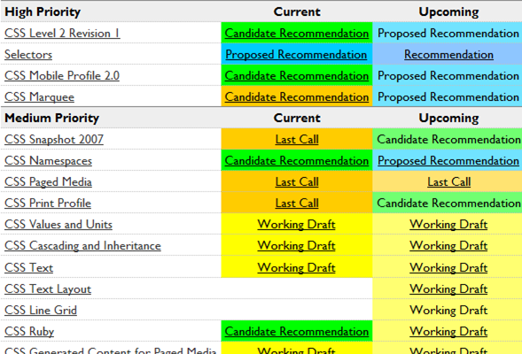
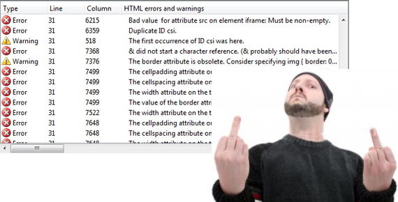
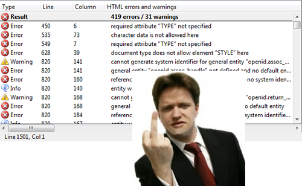
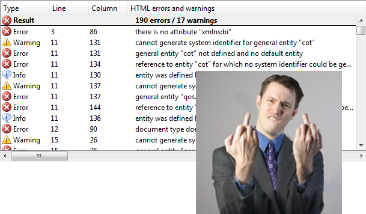
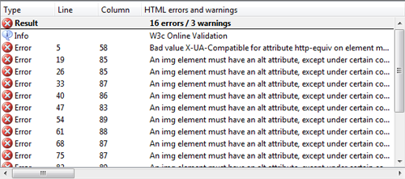
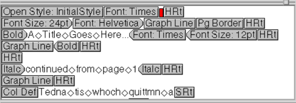
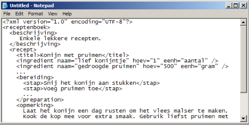
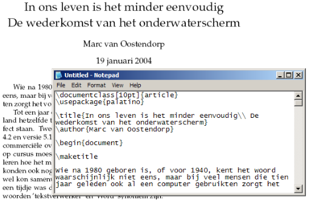
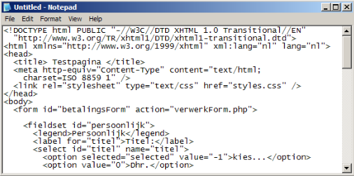
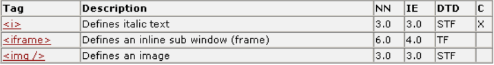

SYNTAX
use the arrow keys to navigate; press space for slide overviewSYNTAX
Web standards
Web standards
- A web standard describes within a certain field:
- syntax rules
- best practices
- technical specifications for rendering engines (e.g. browsers)
- Most important organizations for the web:
- Preparative work may be done by specialized working groups
- WHATWG (HTML5)
- Web RTC working group
- ...
Status of a standard (1)
- Under development: under construction (CSS3)
- Working draft: published for review by "the community"; major changes expected (HTML5,
XHTML2) -
Candidate recommendation: feedback from implementors; minor changes possible, usually for practical reasons (CSS2.1 until 2011)
→ nerdspeak for 'done and dusted' - Proposed recommendation: document is submitted to W3C council for final approvement
- W3C Recommendation: accepted by the W3C for wide deployment (XHTML1.1, CSS2.1...)
Status of a standard (2)
-
Some standards are split modules; each module is handled separately:

Parties involved
-
Parties involved in a standard:
- W3C → draft and publish the standards (actually not very important factor)
- browser vendors → implement standards and experiment with new features
- visitors → choose device and browser (adoptation rate)
- website owner → target audience and graceful degradation expectations
- open source community → available code snippets, frameworks...
- you → skills, favorites...
Can I use...?
- It is better not to think of a standard as a undividable unit
- Think of it as a recommended use of a related set of techniques, each of which may be used if support is sufficient for your goal
-
Get a general idea of browser support:
- HTML5test (compatibility test)
- html5readiness.com (nice visualization)
- CSS3test (compatibility test)
- Find detailed compatibility info here:
Graceful degradation (1)
- For unsupporting browsers sometimes a fallback (mostly Javascript) is available
- If not: websites do not need to look identical in every browser
- Example for CSS3 animations (see farukat.es):
-
supported in Chrome19
unsupported but still acceptable in IE9
Graceful degradation (2)
- Example for CSS3 rounded corners and box shadow:
-

the unsupported version on the right is still acceptable -
This is called graceful degradation
- code for the best browser first
- provide acceptable fallback for lesser browsers
- 'top-down' approach
Graceful degradation (3)
- These small differences may even help pushing users to better browsers
-
Differences are ok as long as they are non-critical:
critical non-critical Accessibility Presentation Layout Design Usability Experience
- Interesting reading on common CSS3 fallbacks: Using CSS3 — Older Browsers And Common Considerations
Web standards timeline (1)
| year | html | css | javascript | |
|---|---|---|---|---|
| 1991 | HTML1 | Defines 20 HTML elements (13 remain today) | ||
| 1992 | ||||
| 1993 | ||||
| 1994 | HTML2 |
New elements like <h1>, <br />… NN1 appears |
||
| 1995 |
HTML3 was too ambitious and never made it IE1 appears Browsor specific HTML extensions |
|||
| 1996 | CSS1 | JS 1.0 | Javascript introduced in NN2 | |
| 1997 | HTML3.2 | JS 1.2 |
First HTML version developed by the W3C; math formulas dropped, most of NN's additions adopted IE4 vs NN4 — browser war at its peak |
|
| 1998 | HTML4 | CSS2 | JS 1.3 | Three HTML variations: Transitional, Frameset and Strict. |
| 1999 | JS 1.4 | IE5 released; NN starts sinking | ||
| 2000 |
XHTML1 (S, F, T) |
JS 1.5 | XHTML = reformulation of HTML in XML syntax | |
| 2001 | XHTML1.1 |
XHTML1.1 is based on XHTML1.0 Strict IE reaches nearly 100% marketshare IE6 released with Windows XP |
||
| 2002 | ||||
| 2003 | IE4- and NN4- disappeared - tableless web layout is now possible | |||
| 2004 |
Firefox 1.0 released Rebellion in XHTML2 workgroup; parallel HTML5 workgroup formed |
|||
| 2005 | CSS2.1 | JS 1.6 | CSS2.1 ≈ snapshot of browser CSS2 support | |
| 2006 | JS 1.7 | IE7 released | ||
| 2007 | ||||
| 2008 | JS 1.8 | |||
| 2009 |
|
IE8 released W3C gives up on XHTML2 and embraces HTML5 |
||
| 2010 | ||||
| 2011 | IE9 released; marketshare below 60% | |||
| today | HTML5 | CSS3 | ||
| future | CSS4 | JS Harmony |
Web standards Timeline (2)
-
In ancient times: hybrid markup
- HTML 2.0, 1995
- HTML 3.2, 1997
- HTML 4.01, 1999
-
Yesteryears: move towards structural markup
- HTML 4.01 Transitional
- HTML 4.01 Frameset
- HTML 4.01 Strict
Web standards Timeline (3)
-
Yesterday: stricter syntax
- XHTML 1.0 Transitional
- XHTML 1.0 Frameset
- XHTML 1.0 Strict
-
Today: pave the cowpaths
XHTML 2.0HTML5!
Typical XHTML 1.1 page
- Example of a typical XHTML 1.1 page:
-
<!DOCTYPE html PUBLIC "-//W3C//DTD XHTML 1.1//EN" "http://www.w3.org/TR/xhtml11/DTD/xhtml11.dtd"> <html xmlns="http://www.w3.org/1999/xhtml" xml:lang="nl"> <head> <title> Testpage </title> <meta http-equiv="Content-Type" content="text/html; charset=ISO-8859-1" /> <script type="text/javascript" src="js/scripts.js"></script> <link type="text/css" rel="stylesheet" href="css/styles.css"> </head> <body> <p>... here comes the page content ...</p> </body> </html>
- Strict XHTML syntax
- Valid but not easy to remember
- Still widely used today
Typical HTML5 page
- The same page in HTML5:
-
<!DOCTYPE html> <html lang="en"> <head> <title> Testpage </title> <meta charset="utf-8" /> <script src="js/scripts.js"></script> <link rel="stylesheet" href="css/styles.css"> </head> <body> ... here comes the page content ... </body> </html>
- Also valid, much simpler and modern
- New sites should use HTML5
- We'll use HTML5 in this course
In this course (1)
- We will use HTML5 + CSS2.1 and some CSS3
-
HTML5's syntax is rather loose, so we'll add some custom rules:
- lowercase for tag names and attributes
- double quotes around attribute values
- close empty elements with / or, e.g.
<br /> - close all non-empty elements with end tag, e.g.
<li>...</li> - do not use presentational markup like
<b>,<i>,<font>...
- Always validate our code
In this course (2)
-
You may use experimental CSS3 and HTML5 techniques, but:
- make sure it is non-critical
- or: provide Javascript backup
- or: provide acceptable graceful degradation
- if it is vendor specific: use vendor prefixes
- do not make 'webkit only' sites
- → test your site on all common browsers and systems!
Are standards important?
Nice Standards, but...
How is the web doing? (1)
- http://www.google.com
- no real HTML5 and lots of errors 
Nice Standards, but...
How is the web doing? (2)
- http://www.amazon.com
- still HTML 4.01 and lots of errors 
Nice Standards, but...
How is the web doing? (3)
- http://www.microsoft.com
- still XHTML 1.0 and lots of errors 
Nice Standards, but...
How is the web doing? (4)
- but: http://ie.microsoft.com/testdrive/
- 
- → no significant errors
- → they can if they want
Nice Standards, but...
What about us?
-
Majority of sites
- bad code
- old code
- high maintenance costs
- bad usability
- bad accessibility
-
Choose different!
- usability
- accessibility
- good and standards compliant code
- this is not about ethics, but...
SYNTAX
Markup languages
Presentational markup
- Example of presentational markup: WordPerfect

Structural markup
- Example of structural markup: XML

Hybrid markup
- Example of hybrid markup: TeX

HTML markup
- HTML: structural markup language for web pages (or better: web based applications)
- In earlier times also presentational, but please for design and layout, use CSS instead!

SYNTAX
HTML syntax
Basic page structure (1)
- Page structure in HTML5:
-
<!DOCTYPE html> <html lang="en"> <head> <title> Testpage </title> <meta charset="utf-8" /> </head> <body> ... here comes the page content ... </body> </html>
- We will always use this basic structure
It is important that the language attribute is set and correct, or screenreaders will try to read the content in a wrong language, which sounds rather funny
Basic page structure (2)
-
Essential parts:
- Doctype declaration
<!DOCTYPE html> - Elements
<html>,<head>and<body> - A relevant title in
<title>...</title> - Characterset declaration
<meta charset="..." />
- Doctype declaration
- Without doctype, some browsers might fall back to quirks modus and display the page different
- Without charset declaration, some characters may display different
- Check if your page validates with the Web Developer plugin!
Basic example
- Sample page with some basic elements (headers, lists, paragraphs...)
-
<!DOCTYPE html> <html lang="nl"> <head> <title> Testpage </title> <meta charset="utf-8" /> </head> <body> <h1>Eenvoudig voorbeeld</h1> <h2>Introductie</h2> <p> Dit is een voorbeeld van een simpele webpagina. Desondanks bestaat zelfs een eenvoudige webpagina als deze veel verschillende markup elementen. </p> <p> Probeer ondertussen de functie van de verschillende markup elementen te begrijpen die in de code van deze pagina voorkomen. De belangrijkste staan hieronder opgesomd. Je kunt als je dit wil de link onderaan gebruiken om alvast een voorsmaakje te krijgen van de mogelijkheden van HTML. Maar het beste is natuurlijk de cursus verderlezen <img src="img/02_html_syntax/icon_wink.gif" alt="wink icon" /> </p> <h2>Over dit voorbeeld</h2> <p><em>Enkele belangrijke elementen in de body:</em></p> <ul> <li>de hoofdings in twee verschillende niveau's</li> <li>paragrafen</li> <li>de <em>benadrukte</em> tekst</li> <li>dit opsommingslijstje</li> <li>de link onderaan</li> <li>de afbeelding</li> </ul> <p> Volg deze link om naar de <a href="http://www.w3schools.com/">w3schools tutorials</a> te gaan. </p> </body> </html>
Code layout (1)
- Browsers ignore code layout (double spaces, tabs, enters)
- In theory this means total freedom
- BUT see house rules:
- opening and closing tag on the same line, or
- opening and closing tag on seperate lines with the same indent, and the content indented
- indent with tabs only, no spaces
-
<xxx> ... ... ... </xxx> <xxx>...</xxx>
Code layout (2)
- Enters are converted to spaces
- Example:
-
<!-- remove all whitespaces and see what happens --> <img src="img/02_html_syntax/button1.png" /> <img src="img/02_html_syntax/button2.png" /> <img src="img/02_html_syntax/button3.png" /> <img src="img/02_html_syntax/button4.png" />
Tip: the codepanel is editable; try it out!
HTML elements (1)
- Are codes marking the structure of content
- Non-empty elements:
<xxx>...</xxx>
(I'll list them as<xxx>) - Empty elements:
<xxx />
(I'll list them as<xxx />) - Elements from the page example:
<h1>,<h2>,<p>,<a>,<ul>,<li>,<em>,<img /> - House rules:
- use lowercase for element name
- always close empty elements with a /
- always use a closing tag for non-empty elements
HTML elements (2)
- For an overview see appendix: 
Blocklevel and inline (1)
- Blocklevel: appears on a single line
- Inline: can appear in the middle of a line of text
- Blocklevel elements may contain blocklevel and inline elements
- Inline elements may only contain inline elements (exception:
<a>can also contain blocklevel elements) - Blocklevel or inline?
<h1>,<h2>,<p>,<a>,<ul>,<li>,<em>,<img />
Blocklevel and inline (2)
- Always structure your page or content block with blocklevel elements first before adding inline elements
- This validates but lacks structure:
-
... <p>here is a picture of myself:</p> <img src="img/me.jpg" alt="picture of myself" /> </body> </html> - Better:
-
... <p>here is a picture of myself:</p> <p><img src="img/me.jpg" alt="picture of myself" /></p> </body> </html>
Wrapping an inline element in a blocklevel element is actually not really necessary as long as you make it blocklevel. For this we need CSS, which is a topic for later chapters, so for now we'll stick to wrapping it in a blocklevel element.
Attributes
- Additional properties of an element
- Should be in the opening tag, never in the closing tag
-
<img src="..." alt="..." /> <a href="...">...</a> - House rules:
- lowercase for attribute name
- use double qoutes around attribute value
Comments
- Anything between
<!--and-->is ignored - Commenting is a good habit!
- May also be used to disable pieces of code:
... <li>the bulleted list</li> <li>the link below</li> <li>the image</li> </ul> <!-- There's still a bug somewhere here <p> Follow this link to go to the <a href="http://www.w3schools.com/>w3schools tutorials</a> </p> --> </body> </html>
Metatags
- Provides metadata about the HTML document.
- It usually consists of name/value pairs:
<head> ... <meta name="description" content="Slides for Webtechnology1" /> <meta name="keywords" content="HTML, CSS" /> <meta name="author" content="Rogier van der Linde" /> </head> - Many such tags exist, in fact, you may specify any name/value pair
- Description and keywords were once important for search engine indexing, but are largely ignored these days
Link relations
- Links the document to other resources:
<head> ... <link rel="alternate" type="application/rss+xml" href="http://myblog.com/feed" /> <link rel="icon" href="img/icons/favicon.ico" /> <link rel="first" href="http://myblog.com/page1.php"> <link rel="prefetch" href="http://myblog.com/main.php"> <link rel="stylesheet" href="css/main.css"> </head> - A browser may or may not do something with these links
- See this favorite icon demo (Firefox)